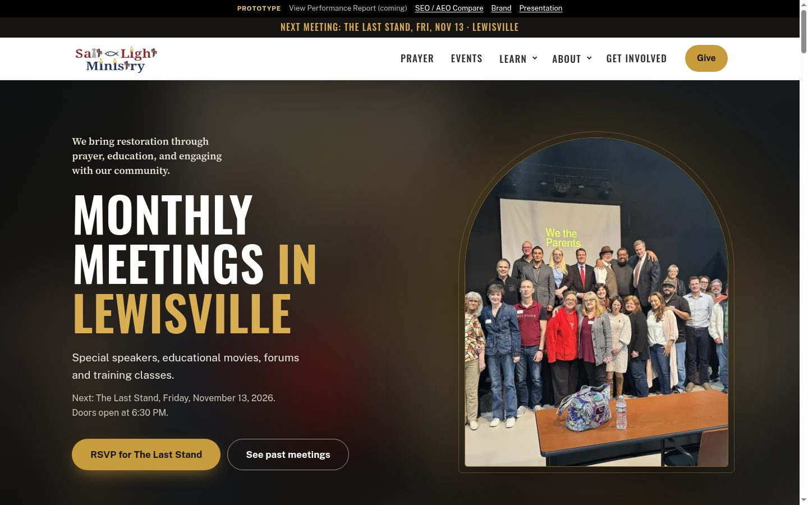
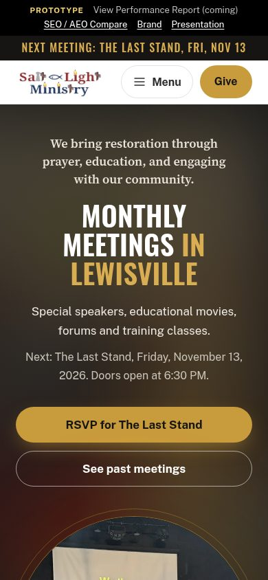

Selected Work / Case Study № 11
monthly meetings and prayer, lewisville tx
Salt and Light Council · saltandlight.clientreview.co
Monthly Meetings in Lewisville
Monthly meetings in Lewisville: special speakers, educational movies, forums and trainings. Mountain Movers Prayer Meeting 1st and 3rd Sundays, 7 PM.

The Brief
The Last Stand
Monthly Meetings in Lewisville Special speakers, educational movies, forums and training classes.
The review prototype title is the placeholder [MINISTRY NAME]. The page links to saltandlightcouncil.org and the Lewisville chapter page.
02 — Identity
Tokens from the stylesheet
Swatches are named tokens from the stylesheet.
Color
gold
--gold#C89B3C
gold-2
--gold-2#D9AE52
gold-ink
--gold-ink#7A5A14
Type
Aa Bb
ABCDEFGHIJKLMNOPQRSTUVWXYZ · abcdefghijklmnopqrstuvwxyz · 0123456789
Oswald · named in the stylesheet
Aa Bb
ABCDEFGHIJKLMNOPQRSTUVWXYZ · abcdefghijklmnopqrstuvwxyz · 0123456789
Public Sans · named in the stylesheet
Logo
Logo file from the source page. Shown smaller than the file.

Screenshot pending — content needed
A second mobile screen was not in the prototype files or this repo. The Hive study shows two phones. This page has the one homepage capture stored for the work grid.
03 — Mobile
Homepage on a phone
The phone frame is a screenshot of the same page, captured at phone width. It is not enlarged.
Results pending — content needed
No load time or before-and-after figure is in a project guide or scope file. Numbers printed on the source page are not repeated here as results.
04 — In Detail
Lines from the live homepage
Screenshot pending — content needed
Section crops were not in the source files. The three notes below are homepage lines, not separate screenshots.
Review prototype
The Last Stand
Monthly Meetings in Lewisville Special speakers, educational movies, forums and training classes.
Review prototype
On the page
By Dawn's Early Light Documentary film · Friday, October 16, 2026 Monumental Movie · Friday, September 25 Protecting North Texas From Hamas and Marxist Special guest speaker Krista Schild · June 20 We the Parents Movie and panel · Friday, Feb.
Review prototype
On the page
9 Robert's Rules of Order Class Training class · Saturday, September 21 State Fair Evangelism Outreach Outreach · Saturday, Oct.
Quote pending — content needed
No named quote or testimonial was copied. Homepage review counts, where the site prints them, stay in the brief as the site's own line.
05 — The long scroll
Homepage viewport
The image is the homepage capture already in this repo. It is the top of the page, not a stitched full-page scroll.
Screenshot pending — content needed
A full-page scroll capture is not in the source files.